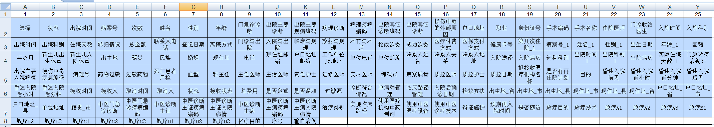
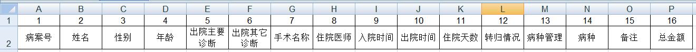

病案统计——临床路径和单病种
在《合理医疗迷思》，我设想对病种进行费用测算，以期主动使用医保支付改革的需要。在接触了科室报上来的临床路径和单病种数据之后，我发现要推进这项的工作的开展并不是一件容易的事情。一方面是之前的数据是通过word表格形式收集的，数据并不全面也不便于后期的统计分析；另一方面则是这些数据都是人工统计汇总的，耗费大量时间精力不说，准确性还不能保证。医院虽然有一个临床路径的模块，但其太过拉跨，临床上没有医师愿意使用。而我打量其设计，并没有我想要的功能。我既没有信心说服领导对HIS追加预算进行优化和升级，也对软件工程师不抱什么期望。在经历公立医院绩效考核被大量数据整得手忙脚乱之后，我充分意识到，如果我能写出一套针对病案数据进行统计分析的工具，那么工作会变得更优雅从容一些。
我首先要解决的是临床路径和单病种的统计，因为我发现通报里的数据质量堪忧，没什么参考价值。我可以得到一份办公表格的病案列表，它每条记录有160多个字段（见图一），而我需要的仅仅是16个字段（见图二）。如果仅仅是用表格的筛选查找功能的话，那狼狈情形可想而知。
【图一】

【图二】

难点不是从161个字段取出16个，因为仅仅是办公表格也可以通过将列宽设0达到隐藏不见不烦的效果。问题是如何对记录按病种进行分类，这里就要搬出临床路径和单病种的规则了：
临床路径规则
中期妊娠引产： 第一诊断为中期妊娠（ICD-10：O04.901）要求终止妊娠，通过利凡诺方式引产，并引产成功者。
稽留流产：第一诊断为稽留流产（ICD-10: O02.100），需要行清宫术。
自然临产阴道分娩：第一诊断为孕足月头位自然临产（无阴道分娩禁忌症）（ICD-10：O80.0伴Z37）
计划性剖宫产：第一诊断为首选治疗方案符合：子宫下段剖官产术ICD-9-CM-3：74.1手术编码者
轮状病毒肠炎：第一诊断为轮状病毒肠炎（ICD-10：A08.001）
疱疹性咽颊炎：第一诊断疱疹性咽峡炎（ICD-10：B00.202）。
手足口病：第一诊断为手足口病（ICD-10：B08.401）。
急性扁桃体炎：第一诊断为急性扁桃体炎 (ICD-10：J03.900)。
支气管肺炎：第一诊断为支气管肺炎（ICD–10：J18.0）。
急性支气管炎：第一诊断为急性支气管炎（ICD-10：J20.900）
小儿腹股沟疝：第一诊断为腹股沟疝（ICD-10：K40.2,K40.9），行择期手术治疗（ICD-9-CM-3：53.0-53.1）
新生儿高胆红素血症：第一诊断为新生儿高胆红素血症（ICD-10：P59）。
单病种规则
社区获得性肺炎：主要诊断ICD-10编码：J13至J16，J18；2岁≤年龄的出院患者。
新生儿呼吸窘迫综合征：主要诊断ICD-10编码：P22的出院患者。
剖宫产：主要手术ICD-9-CM-3编码：74.0，74.1，74.2，74.4，74.99的手术出院患者。
异位妊娠：主要诊断ICD-10编码：O00开头，且伴主要手术ICD-9-CM-3编码：66.01，66.02，66.62，66.95，74.30的手术出院患者。
子宫肌瘤：主要诊断ICD-10编码与名称：D25开头，且伴主要手术ICD-9-CM-3编码：68.29，68.3至68.5，68.9的手术出院患者。
如果仅仅是筛选出院主要诊断的话，那么很大概率会漏掉“变异”或“退出”的情形，故此加上出院其他诊断进行判断筛选分类，那么得到应该就是所需要的列表。然后结合【单病种管理】或【临床路径管理】状态，就可以得到一个初步的统计情况。